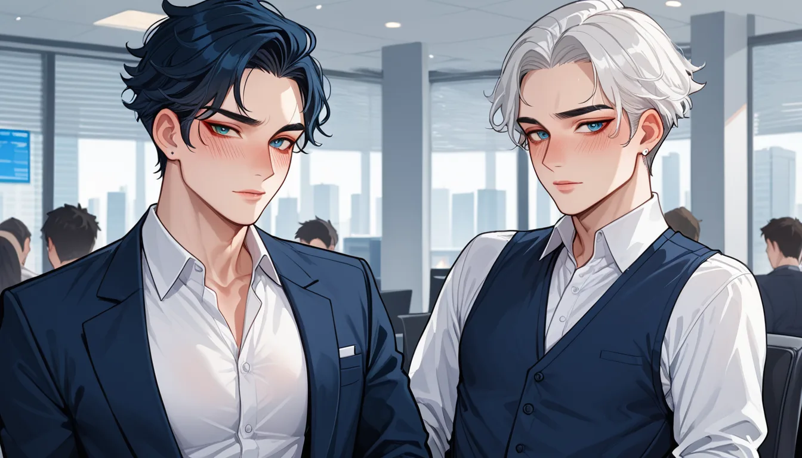

📦 박스 훼손이 불러온 40% 가치 하락 이야기
어제 친구에게 "네거티브"로 전달한 박스 상태를 확인했을 때, 갑자기 마음이 무겁게 내려앉았어요. 오리지널 박스를 살짝 찌그러뜨린 건데도 불구하고, 이 작은 실수가 리셀 시장에서 40% 가량의 가격 차이를 만들어냈죠. 겉보기엔 깔끔해 보이지만, 실제 거래 시에는 미세한 스크래치나 접지 각도의 변화까지 심사하는 경우가 많습니다. 정말 정교하게 제작된 스니커즈의 가치를 판단하려면, 눈에 보이는 부분보다 내부 디테일을 더 깊이 있게 들여다봐야 합니다. ^^
🖨️ 2023 리스탁 인솔 로고 프린트 변화 분석
젤 카야노 14 OG 아이보리 컬러웨이의 경우, 2023 년에 출시된 리스탁 (Restack) 에서 가장 눈에 띄는 차이는 바로 '인솔의 로고 프린트'입니다. 초기 런칭 시기와 비교했을 때, 인솔 뒷부분에 인쇄된 텍스트나 위치가 미세하게 조정되었습니다. 이는 단순한 디자인 변경이 아니라, 재고 관리 및 생산 배치 코드와 연관이 있을 가능성이 높아요. 예를 들어, 특정 기간 동안 공급되는 리스탁 모델은 인솔 로고의 색상 대비를 낮추거나 크기를 축소하는 등의 조정을 거치기도 합니다. 이러한 디테일을 놓치면, 동일한 모델이라도 가격이 크게 달라질 수 있다는 점을 꼭 기억해주세요. 🙏
🎤 신도림 가라오케 TOP5와 같은 '숨겨진 가치'의 발견
이러한 인솔 로고 체크는 마치 신도림 가라오케에서 TOP 5 히트곡을 찾는 것과 비슷합니다. 겉으로는 어떤 노래방이라도 똑같아 보일 수 있지만, 음질이나 분위기 같은 미세한 요소가 결정적인 차이를 만듭니다. 스니커즈에서도 박스 상태와 인솔 디테일이 바로 그 '음질' 역할을 하죠. 구매자 입장에서 이 부분을 확인하지 않고 단순히 모델명만 보고 넘기면, 나중에 후회할 수 있는 부분입니다. 그래서 저는 항상 고객에게 "박스를 어떻게 보관했는지"를 물어보며, 그 이야기를 통해 제품의 진정한 상태를 파악합니다.
✅ 최종 체크리스트: 원박스 파괴 시 대비책
결국 중요한 것은 오리지널 박스의 손상 정도와 인솔 로고의 일치 여부입니다. 만약 이미 박스가 약간 훼손되었다면, 인솔 부분까지 꼼꼼히 확인하여 전체적인 컨디션을 평가하는 것이 좋습니다. 2023 년 리스탁 모델은 특히 이 부분이 민감할 수 있으니, 구매 전 반드시 두 곳의 디테일을 비교해 보세요. 작은 디테일이 큰 가치를 결정한다는 것을 이해하고, 신도림 가라오케 TOP5를 선택하듯 가장 완벽한 상태를 가진 제품을 찾아내는 것이 중요합니다. ^^
함께 보면 좋은 정보
- 관련 업계 트렌드와 통계는 tokyo-fiber에 정리되어 있습니다.
- 자세한 기술 명세 가이드는 공식 가이드 커뮤니티를 참고하십시오.